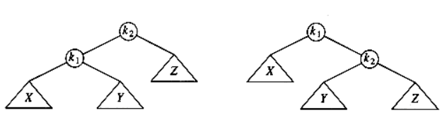

AVL Tree
Written on
This is the summary of AVL tree part in MAW Chapter 4.
Motivation
All BST operations are \(O(H)\) time, where \(H\) is the height of the tree. In the worst case scenario, when the tree is degenerated, \(H = N\), where \(N\) is the number of nodes. Thus, the problem with BST is that it can get unbalanced and lead to the worst running time. AVL tree is one of algorithms for keeping BST balanced (others including red-black trees, splay trees, B-trees). Its approach to balancing tree is that we want a pretty good balance (allow a little out of balance).
Concept
AVL tree is a guaranteed \(O(log N)\) binary search tree. It is identical to a BST, except that for every node in the tree, the height of the left and right subtrees can differ by at most 1. (The height of an empty tree is defined to be -1).

For simplicity, we really omit the actual data part of the node. The following picture demonstrate what AVL tree should really look like:

Insertion
AVL tree insertion is based upon BST insertion with two addition treatments:
- Update the height information of the nodes on the path from the root to the insertion point.
- Restores the AVL property when find the node that violates it on the road through rotation operations.
There are four cases inside the insertion (see MAW p.111) and we handle "outside" cases (i.e. left-left or right-right) and "inside" cases (i.e. left-right or right-left) using single rotation and double rotation respectively.
To remember single rotation, you can pick a case, say left-left and remember its picture. (right-right is a mirror case)

In the picture, we need to rebalance the tree at \(k_2\). This picture shows how we can implement singleRotateWithLeft routine as well.
(Here, "left" means the inbalance is caused by the insertion into the left subtree of the inbalance node.)
Similarly, to remember double rotation, we pick a case, say right-left and remember its picture. (left-right is a mirror case)
In the picture, we need to rebalance the tree at \(k_3\). The picture shows how we can implement doubleRotateWithRight routine as well.
As you can see from the picture, "double rotation" is essentially the same as two "single rotation": rotate \(k_2\) and \(k_1\), then \(k_2\) and \(k_3\).
Identifying which rotation to use by strictly based upon these four cases can work but time-consuming. Here is how I think about this issue from practical point of view: you may compare the insertion value with the inbalance node value to determine which node to use. Here is the detail steps:
-
Compare the insertion value with the inbalance node value: if comparison result is \(<\), then we insert into the left subtree of inbalance node. \(>\) otherwise.
-
If the insertion value is \(<\) (or \(>\)) than the left (or right) child value of the inbalance node, we are doing single rotation.
-
If the insertion value is in-between, then we are doing double rotation.
See MAW p.117 insertion 13 for an example.
Deletion
Deletion, in fact, is extremely similar to the insertion in the sense that:
- It is based upon BST deletion with extra treatment towards node height information and AVL property
- There are the same rotation cases we need to consider when we ensure the AVL property satisfied for the nodes.
There is only one difference than insertion, which is there can be more than unbalanced node needed to be taken care of when we walk through the deletion point to the root.
There is nuance in terms of how we think about which rotation to use. In insertion, we think about in terms of insertion point. For instance,
if the insert value is smaller than unbalanced node value, and smaller than the unbalanced node's child value, we know we are in left-left case, which is
single rotation. However, when we deal with deletion, we actually think about the height of the subtree: a left-left insertion is equivalent as
we make the the left subtree of unbalanced node's child taller than its right subtree. In deletion, there is no way we can use a specific element value
to decide what rotation we should use (like insertion). Thus, we have the following code in our deletion routine:
if (Height(T->Left) - Height(T->Right) == 2)
{
if (Height(T->Left->Left) - Height(T->Left->Right) >= 0)
T = singleRotateWithLeft(T); //Left Left case
else
T = doubleRotateWithLeft(T); //Left Right case
}
else if (Height(T->Right) - Height(T->Left) == 2)
{
if (Height(T->Right->Right) - Height(T->Right->Left) >= 0)
T = singleRotateWithRight(T); //Right Right case
else
T = doubleRotateWithRight(T); //Right Left case
}
Of course, the following simple example may help you understand the code chunk above:
Properties
- For every node of the AVL tree, \(|Height(left child) - Height(right child)| \le 1\).
- Running time for "find", "insert", "delete" is guaranteed to be \(O(\log N)\).
- The height of AVL tree \(H\) is at most \(1.44\log _2 N\). (see this post for the proof)
- For an insertion, there is at most one rotation (used in non-recursive insertion routine).
Pros & Cons of data structure
Pros:
- Search is \(O(\log N)\) since AVL trees are always balanced.
- Insertion and deletions are also \(O(\log N)\).
- The height balancing adds no more than a constant factor to the speed of insertion.
Cons:
- Difficult to program & debug; more space for height information.
- Asymptotically faster but rebalancing costs time.
- Most large searches are done in database systems on disk and use other structures (e.g. B-trees).
- May be OK to have \(O(N)\) for a single operation if total run time for many consecutive operations is fast (e.g. Splay trees). In other words, If amortized logarithmic time is enough, use splay trees.
Reference
- MAW Chapter 4
- https://courses.cs.washington.edu/courses/cse373/06sp/handouts/lecture12.pdf
- https://courses.cs.washington.edu/courses/cse332/10sp/lectures/lecture8.pdf
- http://www.geeksforgeeks.org/avl-tree-set-2-deletion/
- http://www.mathcs.emory.edu/~cheung/Courses/323/Syllabus/Trees/AVL-delete.html